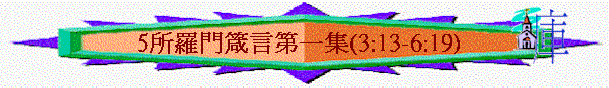

|
所羅門箴言第一集 |
所羅門箴言第二集 |
所羅門箴言第三集 |
其他人的言語附篇 |
|
1 - 9 |
10-24 |
25-29 |
30-31 |
「得智慧，得聰明的，這人便為有福。」3:13
A.比物質更寶貴
「因為得智慧勝過得銀子，其利益強如精金，比珍珠（或作：紅寶石）寶貴；你一切所喜愛的，都不足與比較。」3:14-15
a.勝過銀子
b.強如精金
c.比珍珠寶貴
d.一切喜愛的不足比較
B.得著者有福樂
「他右手有長壽，左手有富貴。他的道是安樂；他的路全是平安。他與持守他的作生命樹；持定他的，俱各有福。」3:16-18
a.有長壽
b.有富貴
c.有安樂
d.有平安
e.有生命
∼生命樹曾在創世記中出現，人吃了是永遠不死的，代表生命與長壽
C.神用之創天地
「耶和華以智慧立地，以聰明定天，」3:19
∼神也用智慧創造天地，可想而知，智慧的重要性是何等的大！
6.第六篇訓誨----教導：要謹守真智慧(3:21-35)
A.謹守的提醒
「我兒，要謹守真智慧和謀略，不可使他離開你的眼目。」3:21
a.謹守----看守，保持
b.不離----不離開你的眼目，時常看到，不會走開，在你察看之下
B.謹守的效果
「這樣，他必作你的生命，頸項的美飾。你就坦然行路，不至碰腳。
你躺下，必不懼怕；你躺臥，睡得香甜。忽然來的驚恐，不要害怕；惡人遭毀滅，也不要恐懼。因為耶和華是你所倚靠的；他必保守你的腳不陷入網羅。」3:22-26
a.得生命
b.得美飾
c.得安穩
∼因神是我們的倚靠，守主命令，祂使保守他的，他可以不懼忽然來的驚恐，睡得也甘甜
C.謹守的內容
a.幫助人
「你手若有行善的力量，不可推辭，就當向那應得的人施行。你那裡若有現成的，不可對鄰舍說：去吧，明天再來，我必給你。」3:27-28
(1)有力量不推辭
(2)有現成不拖延
b.不害人
「你的鄰舍既在你附近安居，你不可設計害他。人未曾加害與你，不可無故與他相爭。」3:29-30
(1)不設計害鄰舍
(2)不無故與人爭
c.不行惡
「不可嫉妒強暴的人，也不可選擇他所行的路。」3:31
(1)不嫉妒惡人
(2)不行惡人路
D.善惡的對照
「耶和華咒詛惡人的家庭，賜福與義人的居所。他譏誚那好譏誚的人，賜恩給謙卑的人。智慧人必承受尊榮；愚昧人高陞也成為羞辱。」3:33-35
7.第七篇訓誨----鼓勵：得智慧的重要(4:1-9)
A.要聽父親的教訓
「眾子啊，要聽父親的教訓，留心得知聰明。因我所給你們的是好教訓；不可離棄我的法則（或作：指教）。」4:1-2
a.態度
(1)要聽
(2)留心
(3)不離
b.原因
∼因為是好教訓，是好的指引(instruction)
B.已聽父訓的榜樣
a.是家中的愛子
「我在父親面前為孝子，在母親眼中為獨一的嬌兒。」4:3
b.已存父親教訓
「父親教訓我說：你心要存記我的言語，遵守我的命令，便得存活。」4:4
C.要得智慧的重要
「要得智慧，要得聰明，不可忘記，也不可偏離我口中的言語。」4:5
a.得保護
「不可離棄智慧，智慧就護衛你；要愛他，他就保守你。」4:6
b.得聰明
「智慧為首；所以，要得智慧。在你一切所得之內必得聰明（或作：用你一切所得的去換聰明）。」4:7
∼在你一切所得之內，再得聰明
c.得尊榮
「高舉智慧，他就使你高陞；懷抱智慧，他就使你尊榮。他必將華冠加在你頭上，把榮冕交給你。」4:8-9
8.第八篇訓誨----教導：持定智慧之路(4:10-19)
A.智慧之路的特點
「我兒，你要聽受我的言語，就必延年益壽。我已指教你走智慧的道，引導你行正直的路。你行走，腳步必不至狹窄；你奔跑，也不至跌倒。要持定訓誨，不可放鬆；必當謹守，因為他是你的生命。」4:10-13
a.智慧
b.正直
c.可行
d.寬廣
e.不倒
B.持定訓誨的表現
a.持定訓誨
「要持定訓誨，不可放鬆；必當謹守，因為他是你的生命。」4:13
b.不行惡路
「不可行惡人的路；不要走壞人的道。要躲避，不可經過；要轉身而去。」4:14-15
(1)先要躱避
(2)不可經過
(3)轉身而去
C.善惡之路的分別
a.善人的路
「但義人的路好像黎明的光，越照越明，直到日午。」4:18
b.惡人的路
「惡人的道好像幽暗，自己不知因什麼跌倒。」4:19
9.第九篇訓誨----教導：保守全體健康(4:20-27)
A.保守全體的方法
「因為得著他的，就得了生命，又得了醫全體的良藥。」4:22
a.耳----留心教訓
「我兒，要留心聽我的言詞，側耳聽我的話語，」4:20
b.眼----不離眼目
「都不可離你的眼目，要存記在你心中。」4:21
c.心----存記心中
B.保守全體的關鍵
「你要保守你心，勝過保守一切（或作：你要切切保守你心），因為一生的果效是由心發出。」4:23
「惟獨出口的，是從心裡發出來的，這才污穢人。因為從心裡發出來的，有惡念、兇殺、姦淫、苟合、偷盜、妄證、謗讟。這都是污穢人的；至於不洗手吃飯，那卻不污穢人。」」太15:18-20
∼先保守自己心(心可指思想或心靈)勝過保守一切
∼我們心如何，整個人也如何，一生所行果效是由心發出
C.保守全體的內容
a.保守口----除掉邪僻乖謬
「你要除掉邪僻的口，棄絕乖謬的嘴。」4:24
∼邪僻----不正及怪僻的事
∼乖謬----不按真理，任意妄為
b.保守眼----向前看正觀看
「你的眼目要向前正看；你的眼睛（原文作皮）當向前直觀。」4:25
∼向前正看----是正確的方向，不是有錯誤
∼向前直觀----是看正直的路，不是歪曲的路
c.保守腳----離開邪惡
「要修平你腳下的路，堅定你一切的道。不可偏向左右；要使你的腳離開邪惡。」4:26-27
10.第十篇訓誨----警告：要遠離淫婦(5)
A.要儆醒
a.留心提醒
「我兒，要留心我智慧的話語，側耳聽我聰明的言詞，為要使你謹守謀略，嘴唇保存知識。」5:1-2
b.淫婦危機
(1)口
「因為淫婦的嘴滴下蜂蜜；他的口比油更滑，至終卻苦似茵蔯，快如兩刃的刀。」5:3-4
(A)是誘人的
∼如蜂蜜一樣
∼易令人動心的
(B)帶來痛苦----似茵蔯
(C)帶來傷痛----如兩刃的刀
(2)腳
「他的腳下入死地；他腳步踏住陰間，以致他找不著生命平坦的道。他的路變遷不定，自己還不知道。」5:5-6
(A)入死地
(B)迷失的
B.要遠離
a.要遠離淫婦
「你所行的道要離他遠，不可就近他的房門，」5:8
b.否則遭惡果
(1)尊榮歲月被奪去
「恐怕將你的尊榮給別人，將你的歲月給殘忍的人；」5:9
(2)力量財物歸別人
「恐怕外人滿得你的力量，你勞碌得來的，歸入外人的家；」5:10
(3)身體皮肉遭消毁
「終久，你皮肉和身體消毀，你就悲歎，」5:11
(4)至終悲歎不聽勸
「說：我怎麼恨惡訓誨，心中藐視責備，也不聽從我師傅的話，又不側耳聽那教訓我的人？」5:12-13
C.要專一
a.要專一與妻子連合(命令)
「你要喝自己池中的水，飲自己井裡的活水。」5:15
∼妻子如河水、活水、泉源，作為丈夫，要專一與妻子快樂，享受彼此的連合與愛，不要渴別人的井，貪戀別人的泉源及配合
b.妻子單是歸你一人(權利)
「你的泉源豈可漲溢在外？你的河水豈可流在街上？惟獨歸你一人，不可與外人同用。」5:16-17
∼不能再容有第三人進入你的家中；妻子只歸你一人
c.要令對方幸福快樂(責任)
「要使你的泉源蒙福；要喜悅你幼年所娶的妻。」5:18
∼婚姻也是一個責任，要令對方蒙福，要喜悅他，令對方快樂的
d.二人已得愛情滿足(福樂)
「他如可愛的麀鹿，可喜的母鹿；願他的胸懷使你時時知足，他的愛情使你常常戀慕。」5:19
∼麀鹿指母鹿
e.所以為何戀慕淫婦
「我兒，你為何戀慕淫婦？為何抱外女的胸懷？」5:20
「他因不受訓誨就必死亡；又因愚昧過甚，必走差了路。」5:23
∼既然你家中的配偶已可給你滿足，為何要戀慕其他人？
∼若人仍不聽，至終帶來惡惡與死亡！
11.第十一篇訓誨----警告：輕率放縱的惡果(6:1-19)
A.輕率作保----承擔責任
「我兒，你若為朋友作保，替外人擊掌，你就被口中的話語纏住，被嘴裡的言語捉住。我兒，你既落在朋友手中，就當這樣行才可救自己：你要自卑，去懇求你的朋友。」6:1-3
∼古時起誓立約是會用擊掌的方式
∼若隨便與人作保，你就要承擔責任，若你已輕率發出承諾，就當懇求朋友收回成命或請他盡早還債
B.懶惰貪睡----貧窮速來
「懶惰人哪，你去察看螞蟻的動作就可得智慧。螞蟻沒有元帥，沒有官長，沒有君王，尚且在夏天預備食物，在收割時聚斂糧食。懶惰人哪，你要睡到幾時呢？你何時睡醒呢？再睡片時，打盹片時，抱著手躺臥片時，你的貧窮就必如強盜速來，你的缺乏彷彿拿兵器的人來到。」6:6-11
C.散佈分爭----災難臨到
「用眼傳神，用腳示意，用指點劃，心中乖僻，常設惡謀，布散分爭。所以，災難必忽然臨到他身；他必頃刻敗壞，無法可治。」6:13-15
∼惡徒會用口及身體言語及眼神作計謀及散佈分爭，至終他們會受災難
D.放蹤行惡----神所憎惡
「耶和華所恨惡的有六樣，連他心所憎惡的共有七樣：就是高傲的眼，撒謊的舌，流無辜人血的手，圖謀惡計的心，飛跑行惡的腳，吐謊言的假見證，並弟兄中布散分爭的人。」6:16-19
a.眼 ----高傲
b.舌 ----撒謊
c.手 ----流無辜人的血
d.心 ----圖謀惡計
e.腳 ----飛跑行惡
f.言語----假見證
----布散分爭
∼神給人眼、手、心、腳、口，但人卻放縱行惡，至終令神憎惡